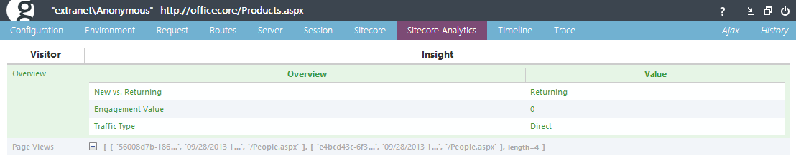

Sitecore.Glimpse
Web diagnostics for Sitecore.
Project maintained by kevinobee Hosted on GitHub Pages — Theme by mattgraham
Sitecore.Glimpse
Sitecore.Glimpse is an extension for Glimpse that provides runtime web diagnostics for websites built on the Sitecore CMS.
What Firebug does for client-side debugging, Glimpse does for server-side debugging. It provides the best view into the inner workings of your application in the server while remaining easy to install, configure and use.
To find out more about what Glimpse itself is take a look at the Glimpse Wiki on GitHub.
How does it work?
Glimpse gathers detailed diagnostic information about the behaviour and execution of your web application. It collects information on the server with each page request and, before the response is sent, formats that data and sends it as JSON to the client.
Two additional custom tabs have been added to display Sitecore information relating to the request.
Sitecore tab
Sitecore Analytics tab
The Sitecore Tab
You will see something like the following when you open the Sitecore tab:
 The full path to the Sitecore Item that the URL resolved to is shown, with the name of the Template that it
is based upon shown in brackets.
Below that there are two sections, Item and Context. Both of these can be drilled into by clicking on the
[+] symbols. The Item section which contains information on the resolved Sitecore Item, it's Template and
Visualization properties is expanded by default as this is where users will typically want to start
exploring the diagnostics exposed by Sitecore.Glimpse.
The full path to the Sitecore Item that the URL resolved to is shown, with the name of the Template that it
is based upon shown in brackets.
Below that there are two sections, Item and Context. Both of these can be drilled into by clicking on the
[+] symbols. The Item section which contains information on the resolved Sitecore Item, it's Template and
Visualization properties is expanded by default as this is where users will typically want to start
exploring the diagnostics exposed by Sitecore.Glimpse.
The Sitecore Analytics Tab
This tab displays information gathered by the Sitecore Digital Marketing System if it is installed on the site that you are browsing.
{kind=link}
The Sitecore.Glimpse NuGet Packages
This project contains the source, corresponding unit tests and build environment for the following NuGet packages:
- Sitecore.Glimpse
- Sitecore.Glimpse.Mvc3 (extension for those wanting to use Sitecore's MVC capability)
- Sitecore.Glimpse.Mvc4 (supports the ASP.NET MVC4 release)